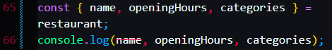

Use curly braces

Name, Categories and opening hours


Giving new variable names to the original names:


Default Values.
In this example we set their Default values to this: []
and menu is not a thing thats in the restaurant object hence the default value
starterMenu is in the object, here we renamed it to a new variable called starters and gave it a default value of []


Assigning Values, since the compiler will treat {} as a code block, we have to use () to contain it.


Nested Objects


We can even put objects into methods, and set default values